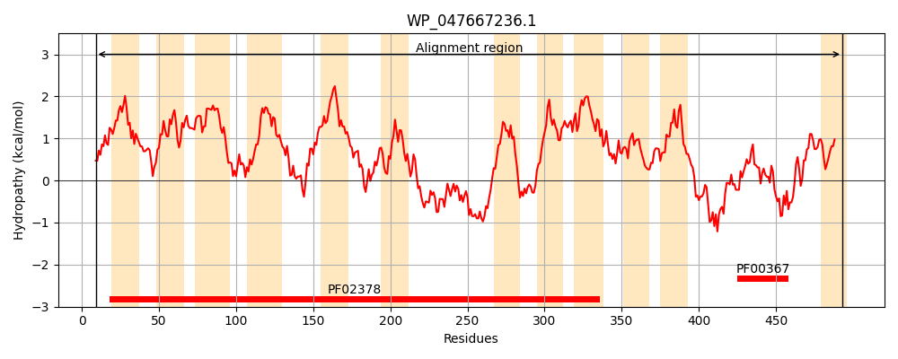
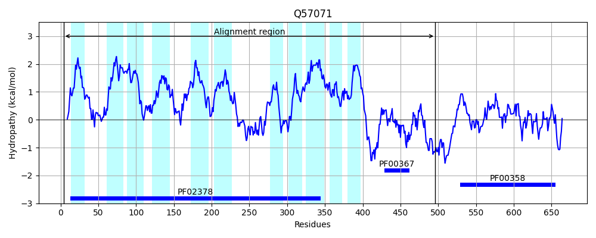
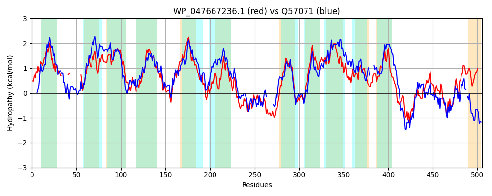

Hit Accession: Q57071
Hit TCID: 4.A.1.1.13
Hit Description: gnl|BL_ORD_ID|14171 gnl|TC-DB|Q57071|4.A.1.1.13 PTS system glucose-specific EIICBA component OS=Staphylococcus carnosus (strain TM300) GN=ptsG PE=1 SV=1
Mach Len: 505
e:0.000000
Query TMS Count : 12
Hit TMS Count: 11
TMS-Overlap Score: 6.150000
Predicted Substrates:CHEBI:5418;glucose
BLAST Alignment:
Score: 1165 , Bit scores: 453 bits, E-value: 9.7e-154, Alignment length: 505, Percentage identity: 47
Query: 9 KSLSKLSMIGRALMLPISLLPAAGLLLAFGDKFH-------MP------------LMMNAGGIIFDNLPMLFAIGSAVGLASESGIAALSAAVSVFITNITISTVLGITPEMASQGGK-YAMVVGIPTLQMGVFGGLICGILASWCYNRFHAMQLPEFLGFFSGKRFVAIATAFLSFILGLLLPYVWQHIQAGIDSLSMVVNGDNQAASTFIFGLVERALIPLGLHHIWYPSFWYSFGDYTTQAGQVIHGDQTIWFKMLEEGVKSFSSDSYQNAGKFMQGEFPLMLFALPAACLAMYHEAHTKNKKIAAGILFSAALTCFLTGITEPVEFTFIFVAPILYIFNAIMAGLSYMTMYLLHAHIAKSFSAGLIDYISFGILPSLNGYQTHFLNAVIVGVPMGLIYYFTFRFVIRRFDVKTPGRTDITVTADDKTDAELATEIVNLLGGSQNIDSVGACITRLRLEVAERDAVDKDGLNGIGARGVVFVGDNGIQIIFGARAQFIAQTM 493
K +L IG+ALMLP+++LPAAGLLLA G+ F MP +M AGGIIFDNL ++FA+G A+GLAS G+AA++A V + N T+ LG+TPE A+ +A V+GIPTLQ GVFGG+I G LA+WCYN+F+ + LP +LGFF+GKRFV I A SFIL + +W IQ G+++ S + N + F+FG ++R LIP GLHHI++ FW+ FG Y AGQ+IHGDQ I+ + + + V AGKFMQGEFP+M+F LPAA LA+Y A +NKK+ AG++ S ALT FLTGITEP+EF+F+FVAP+L+ +A++ GLS++ +YLL H+ +FS G ID+ GILP+ +T + + VG+ IYY FRF+I +F+ KTPGR D V + + +EL ++++ +GG NI + ACITRLR+EV ++ VD L +GA GV+ VG+N +Q IFG ++ I M
Sbjct: 4 KFFGQLQRIGKALMLPVAILPAAGLLLALGNAFQGDALQSLMPFIKAEGFQNVAKMMEGAGGIIFDNLAIIFALGVAIGLASGDGVAAIAAFVGFIVLNKTMGMFLGVTPEKAADAATGFANVLGIPTLQTGVFGGIIIGALAAWCYNKFYNISLPSYLGFFAGKRFVPIMMATCSFILAFPMAIIWPSIQGGLNAFSEGLLASNTGLAVFLFGFIKRLLIPFGLHHIFHAPFWFEFGSYKNAAGQIIHGDQRIFIEQIRDNVP-------LTAGKFMQGEFPVMMFGLPAAALAIYQTAKKENKKVVAGLMLSGALTSFLTGITEPLEFSFLFVAPLLFFIHAVLDGLSFLILYLLDLHLGYTFSGGFIDFFLLGILPN----KTQWWLVIPVGLVYAAIYYIIFRFLIVKFNFKTPGREDKEVKSSNVAASELPFKVLDAMGGKANIKHLDACITRLRVEVNDKAKVDVQELKDLGASGVLEVGNN-MQAIFGPKSDQIKHDM 496 | Protein Hydropathy Plots: |
|---|
|  |  |
Pairwise Alignment-Hydropathy Plot:
|
|---|
|  |